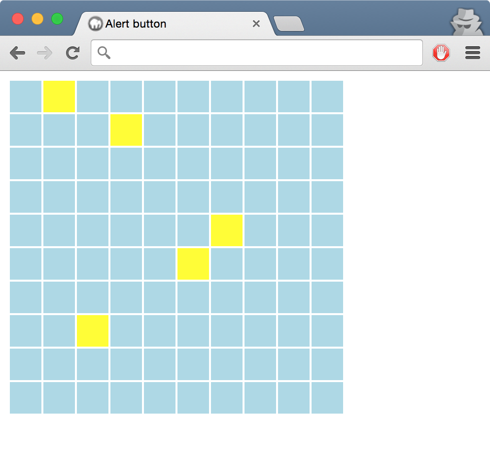

Random site
Tijd voor wat nuttigs. Maak een grote knop die je naar een random website toe brengt. De lijst van sites mag je als array hardcoden in de source.
Hint: Met het window.location object kan je navigeren naar een andere pagina
Welkom terug in het Webdictaat! Komt je het nog bekend voor?
De opzet is weer hetzelfde: elke week zijn er een aantal makkelijke, medium en moeilijke opdrachten waar je in het practicum aan gaat werken. Aan het begin kan je de uitwerking van de medium opdracht aan de practicumdocent laten zien.
In de eerste weken zijn de opdrachten nog los en zonder samenhang, maar langzamerhand werken we naar de grote eindopdracht van dit vak toe. Bewaar je uitwerkingen dus goed, want je gaat ze nodig hebben om uit te copy-pasten bij de eindopdracht. Jullie mogen aan deze eindopdracht in duo's werken, we sluiten het vak af met een assessment. Ik ga nog niet verklappen wat de eindopdracht is, behalve dat het heel groots en spectaculair gaat worden! *hoest* Een online multiplayer browsergame *hoest*
Ready? Set? Go!
Heb je een browser? Heb je een teksteditor? Dan heb je alle software die nodig is om te beginnen met dit vak. Er is nog geen 'echte' IDE voor JavaScript, al het debuggen gaan we in de browser doen met de ontwikkeltools, breakpoints en een hele hoop console.log() statements.
De opdracht luid: Maak een webpagina die 'Hello World' in een dialoogje print. Zorg er wel voor dat al je JavaScript (jaja, die ene regel) in een apart .js bestand staat.
Ok, ok. dat was te makkelijk. We gaan het iets moeilijker maken: Maak een knopje die 'Hello World' zegt als je er op klikt.
Zorg ervoor dat er geen JavaScript in je HTML staat. Dus los het niet op met <button onclick="alert('Hello World');">. Dit geldt ook voor alle volgende opdrachten in dit vak.
Tijd voor wat nuttigs. Maak een grote knop die je naar een random website toe brengt. De lijst van sites mag je als array hardcoden in de source.
Hint: Met het window.location object kan je navigeren naar een andere pagina

Maak een formulier met een postcodeveld. Zorg ervoor dat als het formulier verstuurd wordt er een melding komt als de postcode niet goed is. Jouw JavaScript moet dan voorkomen dat het formulier echt verstuurd wordt. Je mag kiezen uit twee varianten:
Simpel: Controleer of de ingevulde string van het tekstveld precies 6 niet-spatie karakters bevat.
Uitdaging: Controleer of de string begint met 4 cijfers, gevolgd door misschien een spatie, gevolgd door twee letters.

De volgende opdracht is om een klok te maken die automatisch aftelt tot bijvoorbeeld jouw volgende verjaardag. Zorg ervoor dat elke seconde automatisch de klok veranderd.
Hint: Voor deze opdracht heb je window.setInterval() en Date nodig.
Hint: Begin met alleen het totaal aantal secondes weer te geven voordat je het uitsplitst in minuten, uren en dagen.

Tijd voor spelletjes! Heb je bovenstaande allemaal af? Dan kan je je tanden vastbijten in het maken van onze awesome top-down shooter game!
Maak een spelletje waarbij je de main character kan laten lopen met de pijltjes toetsen op een speelveld. Ideeën nodig? Breid je spelletje dan eens uit met:
Hint: De sprites zijn in onze uitwerking simpele <img> tags. Door ze met CSS een absolute positie te geven kan je ze in JavaScript verplaatsen met de top en left attributen.
Hint: Met de window.onkeydown event kan je de pijltjestoetsen afvangen. Welke toets is ingedrukt vind je in het Event object als keyCode property
Sprites nodig? Gebruik deze: up, down, left, right, gold, map, logo
Elke week gaan we een stukje van de eindopdracht maken. En laten we het maar meteen verklappen: het wordt een massively multiplayer online role-playing Zeeslag (MMORPZ). Deze week gaan we beginnen met het programmeren van het speelbord.
Maak een HTML versie van het 10x10 zeeslag speelbord en kleur alle vakjes zeeblauw, je kan hiervoor heel goed een <table> gebruiker. Als de gebruiker een vakje klikt om te schieten verander je het van kleur en alert() je het coordinaat van dat vakje. Als de gebruiker een vakje al geschoten heeft geef je een alert met dat de melding dat de gebruiker een ander vakje moet kiezen.
Houd in JavaScript een datastructuur bij waarin je bijhoud welke vakjes van het bord wel en niet geschoten zijn.
